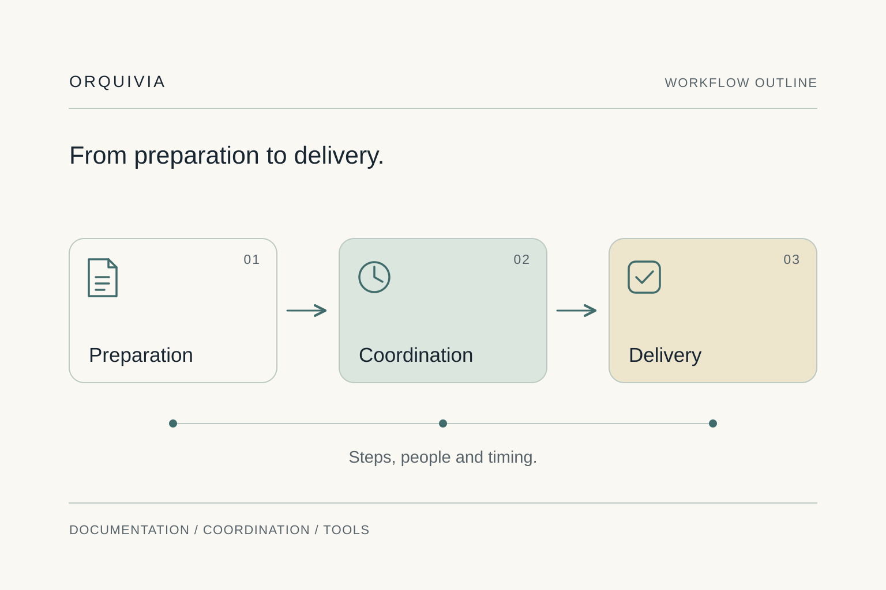
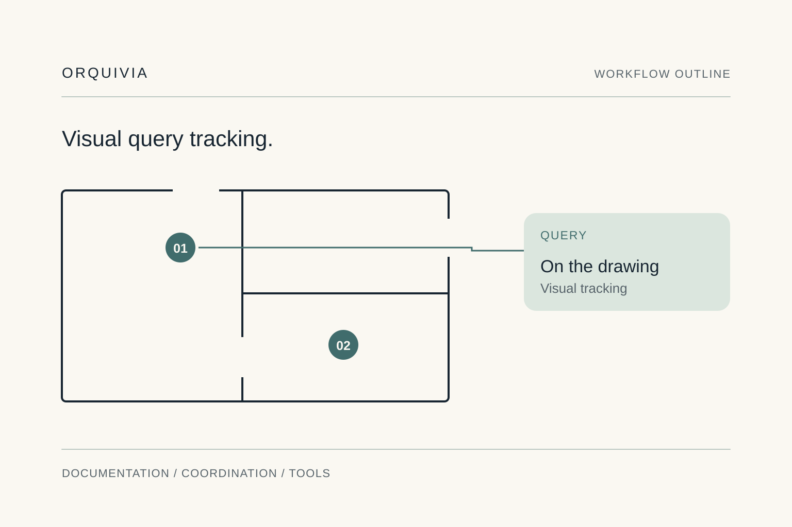
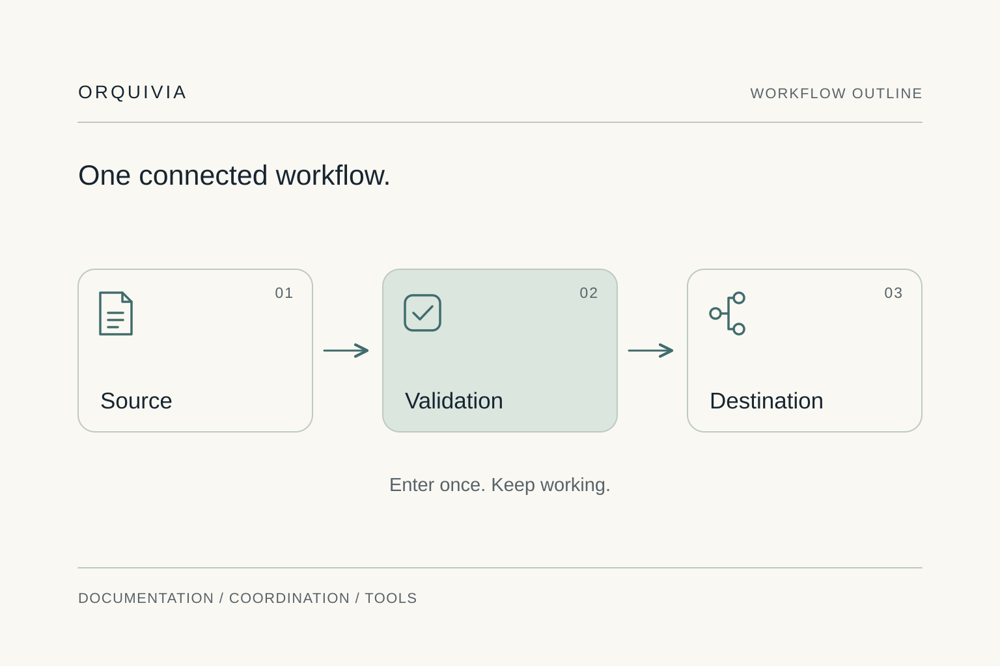

Search.
Ask.
Check again.
- Documents follow different conventions.
- Knowing the status means reconstructing the conversation.
- Management data is updated in several places.
Consulting for architecture practices & project managers
We organise documents, coordinate specific assignments and develop management applications for architecture practices and project managers. Each solution fits the team’s processes and tools.
The work behind every delivery
Gathering documents, checking which query is still open or reviewing what has been quoted can take more follow-up than needed. We organise that workflow and build the missing tool so work can move forward with clear information.
What we do
Three services for architecture practices and project management. We start with a specific need and the outcome that should improve.
We organise practice documents and establish standards for finding, using and sharing them. From project drawings to the documents needed for a delivery.

We coordinate specific assignments within a project: what is needed, who is involved and how the timing fits. A defined scope that takes the work through to delivery.

We build apps for practice management and project tracking: quotes, expenses or visual queries on a drawing. We automate steps and connect the platforms your team uses.

Applied experience
Architecture and retail documentation, project coordination and visual query tracking for project managers. Experience that shapes our services.
We have organised drawings from different projects and established a shared standard for reading and sharing them.
View the case studyWe have coordinated material installation within a tight delivery window, organising resources and the sequence of work.
Explore the approachWe have built an application for project managers to create and track project queries visually from a drawing.
Explore the approachValue Retail · Technical documentation
Existing projects, drawn to different conventions. One clear need: drawings that could be read and shared with clients using a single standard.
We analysed the documentation, identified common elements and turned them into a shared graphic foundation.
Explore the Value Retail caseHow we work
We understand how work happens, propose a specific intervention and put it into practice. We keep what works and check the result of the change.
Explore our consultingUnderstand
We listen to the people who know the process. We identify what works, where delays build up and their impact.
Prioritise
We propose where to act first and which outcome should improve: delivery, follow-up or management. We define the scope before starting.
Design
We organise documents, prepare coordination or develop the tool for the chosen scope. We test the workflow before extending it.
Verify
We compare the result with the starting point, resolve issues and provide documentation and training for day-to-day use.
The person behind Orquivia
I’m Nicole Pereyra, founder of Orquivia. I work with architecture practices and project managers to organise documents, coordinate specific assignments and develop management tools designed around their team.
My experience combines architecture and retail documentation, project coordination and project management applications. Each engagement starts by understanding how the team works.
Let’s discuss your project
Founder
We work on a defined scope: organising documents, coordinating a specific project or building a tool. Your team continues to lead the business; responsibilities for each engagement are defined in the proposal.
We work with architecture practices and project managers who need to organise documents, coordinate specific projects or use management tools designed around their work.
We first check what existing tools can do and where a connection or workflow is missing. We propose a custom app when the process needs functions those tools do not cover.
With a short conversation about your situation and the outcome you want. If there is a fit, we define scope, participants and a proposal before starting work.
Work follows analysis, development, testing and rollout stages. The proposal details the sessions needed and who participates.
It depends on the process, tools and scope. After the initial conversation we propose phases, deliverables, a schedule and a fee. Any ongoing support is agreed separately.
We record the starting point and check process measures: response time, waits, repeated tasks or time to delivery. When a milestone affects billing, we also examine that workflow. Results are checked against practice data.
The implemented solution, its documentation and the training included in the proposal. Maintenance and future extensions are detailed separately.
Project management insights

When starting a project means entering the same information repeatedly, connecting intake to folders, documents and tasks can give the practice more capacity.
If answering a client means cross-checking messages and spreadsheets, a view of milestones and outstanding items can bring together the context for a clear response.
We start by listening
In 15 minutes, we identify one task and the outcome you want. No presentation or full company walkthrough needed.
Let’s explore your project